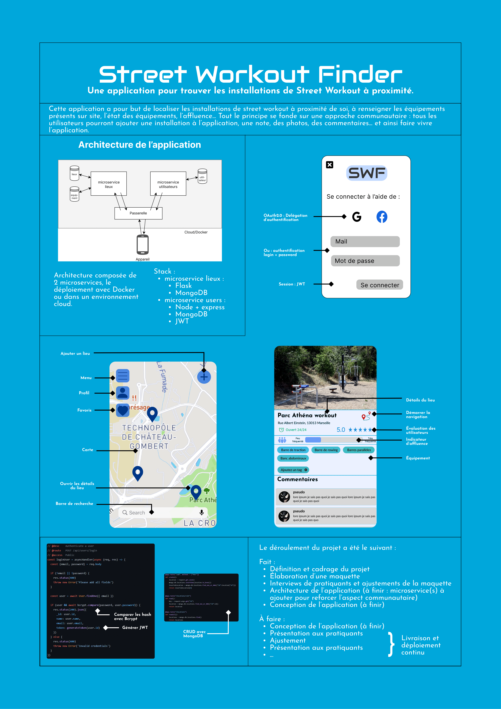

Street Workout Finder
- projet
- Thibault Adelain
- Thomas Duroy
- Jeffrey Edisah
- Kasimir Romer
Le projet pour trouver des installations sportives en plein air près de chez vous !
Objectif
L'objectif du projet est le développement d'une application de géolocalisation d'installations sportives en extérieur (barres de tractions, barres parallèles, etc..) dans la ville de Marseille. La conception de l'application se fait dans une démarche Design Thinking.
Déroulé
Phase de réflection, Design Thinking
19/09/2022 - 05/12/2022
Dans la phase de réflexion, nous nous sommes concentrés sur les étapes suivantes :
- Recherche des besoins utilisateurs (avec des entretiens)
- Recherche de l'état de l'art
- Création du design dans Figma
- Création de l'architecture de l'application (on a décidé d'utiliser une architecture en microservices)
Sprint 1
06/12/2022 - 03/01/2023
Dans le premier sprint, nous avons réalisé les étapes suivantes :
[x] Création du repo GitHub : https://github.com/JeffreyEdisah/Street-Workout-Finder
[x] Création microservice utilisateur et authentification
[x] Début du développement du microservice lieux
Nous avons crée un projet sur GitHub:
Sprint 2
03/01/2023 - 07/02/2023
Dans le deuxième sprint, nous avons réalisé les étapes suivantes :
[x] Finir le microservice lieux
[x] Déploiement du microservice lieux sur AWS Lambda
Sprint 3
07/02/2023 - 28/02/2023
Dans le troisième sprint, nous avons réalisé les étapes suivantes :
[x] Début du travail sur le front en React
[x] Création de la carte avec Leaflet
[x] Ajout des pages Login et Register
[x] Ajout de la page de description d'un lieu
Sprint 4
28/02/2023 - 21/03/2023
Dans le quatrième sprint, nous avons réalisé les étapes suivantes :
[x] Refactoring du microservice lieux
[x] Ajout du menu à la carte
[x] Liaison du front avec les différents microservices
[x] Ajout d'une gateway entre le microservice lieu et le microservice utilisateurs
Sprint 5
28/02/2023 - 21/03/2023
Dans le quatrième sprint, nous avons réalisé les étapes suivantes :
[x] Divers ajustements CSS
[x] Création d'un docker compose avec 3 services : le front, le microservice lieu et le microservice utilisateurs
Poster
